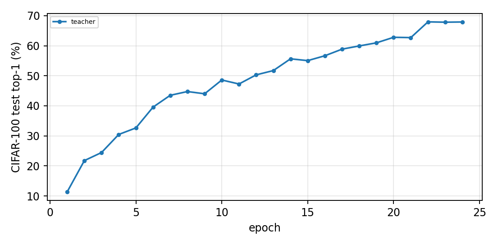
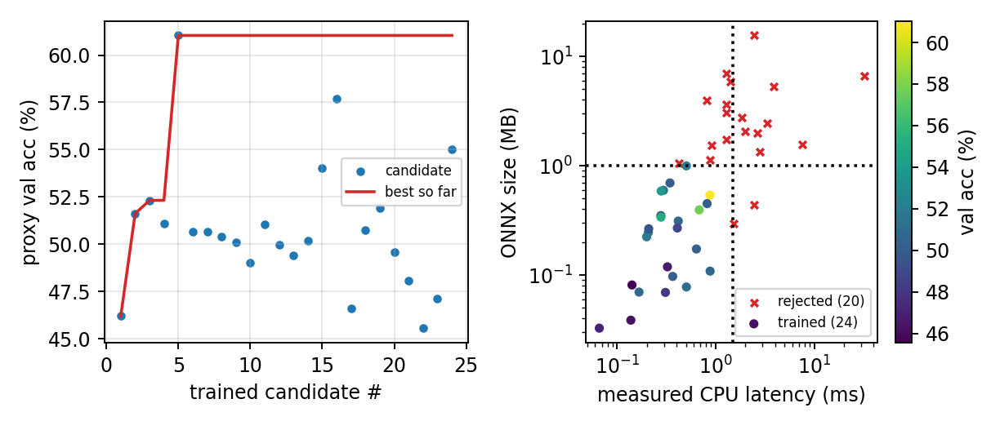

Technical report - Knowledge distillation (Q1) and hardware-aware neural architecture search (Q2). Platform: macOS, Apple M4; PyTorch (MPS) for training, ONNX Runtime (CPU) for inference.
Repository layout: edge_common/ (data, training engine, ONNX/profiling helpers), q1_distillation/, q2_nas/, benchmarks/,
results/, checkpoints/, onnx_models/.
| model | role | parameters (M) | MACs (M), 32x32 input |
|---|---|---|---|
| resnet50 | teacher | 23.71 | 325 |
| mobilenetv2 | student | 2.35 | 88 |
| squeezenet | student | 0.78 | 92 |
| efficientnet_lite0 | student | 3.50 | 116 |
q1_distillation/distill.py)The framework implements soft-target distillation with a temperature softmax, the combined hard + soft objective, and feature-based distillation:
softmax(z/T) (T = 4); the student matches them with KL divergence.
The T^2 factor keeps the soft-term gradient comparable in size to the hard-label term (Hinton et al., 2015).alpha = 0.3 weights the cross-entropy on the ground-truth labels.A_i map the student's mid- and last-stage feature maps to the teacher's
(layer3: 1024 channels, layer4: 2048 channels); teacher maps are average-pooled to the student's spatial size and both maps are standardised per
sample, so the term is scale-free; beta = 1. The adapters exist only during training - they are not part of the student's checkpoint or ONNX graph.edge_common/engine.py)SGD with Nesterov momentum 0.9, learning rate 0.1 with 1-epoch linear warm-up and cosine decay, weight decay 5e-4 (not applied to BatchNorm/bias),
batch size 128, random-crop (padding 4) + horizontal-flip augmentation performed on the device, final-epoch weights (no checkpoint selection on the test set).
The baseline pipeline (train_baseline.py) and the distillation pipeline (train_kd.py) share every hyper-parameter and seed and differ only in the loss.
Checkpoints are resumable (state is written after every epoch).
ResNet-50 on CIFAR-100: 67.90% top-1 on the 10 000-image test set after 24 epochs (23.71 M parameters).

Figure 1 - CIFAR-100 test accuracy per epoch of the teacher.
[teacher] epoch 22/24 loss 0.563 train_acc 83.30 test_acc 67.94 (126.0s) [teacher] epoch 23/24 loss 0.485 train_acc 85.89 test_acc 67.83 (142.0s) [teacher] epoch 24/24 loss 0.470 train_acc 86.36 test_acc 67.90 (152.7s) [teacher] FINAL CIFAR-100 test top-1 = 67.90% (train time this run 433s)
q1_distillation/inference.py - one StudentPredictor(arch, variant, backend) interface for all three students in both variants (baseline / distilled),
with PyTorch or ONNX Runtime back-ends; supports single images, CIFAR-100 test samples and full test-set evaluation from the command line.q1_distillation/export_onnx.py - exports every model to ONNX (opset 17, dynamic batch) and verifies it against PyTorch with ONNX Runtime
(the export fails if logits differ by more than 1e-4).q1_distillation/onnx_infer.py - stand-alone CPU inference with ONNX Runtime only (numpy + Pillow + onnxruntime), including single-image latency.q2_nas/search_space.py, generator.py)| dimension | choices |
|---|---|
| convolutional depth | 2-4 stages, 1-3 blocks per stage (stride 2 at the first block of every stage after the first) |
| filters / channels | stem 16/24/32; per-stage channels 16, 24, 32, 48, 64, 96, 128, 160 |
| kernel size | 3 / 5 / 7 per stage |
| block type | regular convolution or depthwise-separable (depthwise k x k + pointwise 1x1), residual connection when shapes match |
| activation | ReLU, ReLU6, Hardswish, SiLU, LeakyReLU (per stage) |
| input resolution | 16 / 24 / 32 (bilinear resize inside the network graph, so every deployed model takes a 3x32x32 input) |
An architecture is a JSON dictionary. generator.build_from_config turns any sampled dictionary into an nn.Module
(stem -> stages -> global average pooling -> linear classifier), so the same code builds candidates during the search and the final network.
q2_nas/search.py, hardware.py)Aging (regularised) evolution: a FIFO population of 12; at every step a tournament of 4 picks the fittest parent and a child is produced by mutation (or, with probability 0.25, crossover with a second tournament winner) and replaces the oldest member. For every candidate, before any training, the network is exported to ONNX and run with ONNX Runtime on the CPU (1 thread, batch 1) in a fresh process, measuring
resource.getrusage).Candidates that violate the predefined deployment budget are rejected without being trained:
Feasible candidates are trained on CIFAR-10 (3 epochs on 15000 training images; a held-out
5000-image validation split of the training set is used for scoring - the test set is never used during the search) and ranked by
fitness = val_acc - 0.03 * latency/max_latency - 0.02 * size/max_size,
so accuracy is traded off against measured latency and storage size.
24 candidates were trained and 20 were rejected by the hardware constraints (no training time was spent on them).

Figure 2 - left: proxy validation accuracy of every trained candidate and the running best; right: measured latency vs ONNX size of rejected (x) and trained (dots) candidates, dotted lines = deployment constraints.
res32 stem24 :: conv3x1-64-relu | dwsep5x3-64-relu6 | conv3x1-160-silu | dwsep5x1-64-leaky_relu
Measured on the CPU during the search: latency 0.875 ms, model size 0.538 MB, peak inference memory 11.0 MB, 140.3 k parameters, 25.3 M MACs; proxy validation accuracy 61.04%.
| id | val % | lat ms | MB | mem MB | architecture |
|---|---|---|---|---|---|
| 9 | 61.04 | 0.875 | 0.538 | 11.047 | res32 stem24 :: conv3x1-64-relu | dwsep5x3-64-relu6 | conv3x1-160-silu | dwsep5x1-64-leaky_relu |
| 27 | 57.68 | 0.682 | 0.394 | 10.203 | res32 stem24 :: conv3x1-48-relu | dwsep5x3-64-relu | conv3x1-128-relu6 |
| 43 | 55.02 | 0.279 | 0.338 | 10.172 | res24 stem24 :: dwsep3x1-48-relu | dwsep5x2-64-relu | conv3x1-128-relu6 |
| 26 | 54.04 | 0.281 | 0.586 | 10.484 | res16 stem32 :: dwsep3x1-16-relu | conv7x2-48-relu |
| 7 | 52.32 | 0.505 | 0.996 | 12.188 | res16 stem16 :: conv7x2-24-hardswish | conv5x1-96-relu | conv3x1-48-relu | conv7x1-48-silu |
| 34 | 51.92 | 0.200 | 0.224 | 9.562 | res16 stem32 :: conv3x3-16-leaky_relu | conv7x2-24-relu |
| id | reason for rejection | lat ms | MB |
|---|---|---|---|
| 0 | latency 2.64ms > 1.5ms; size 2.01MB > 1.0MB; memory 16.8MB > 16.0MB | 2.641 | 2.007 |
| 1 | size 5.86MB > 1.0MB; memory 24.1MB > 16.0MB | 1.414 | 5.863 |
| 2 | latency 32.13ms > 1.5ms; size 6.61MB > 1.0MB; memory 25.4MB > 16.0MB | 32.125 | 6.608 |
| 4 | size 3.05MB > 1.0MB; memory 17.4MB > 16.0MB | 1.296 | 3.054 |
| 6 | latency 7.59ms > 1.5ms; size 1.55MB > 1.0MB | 7.591 | 1.553 |
| 12 | size 7.01MB > 1.0MB; memory 28.4MB > 16.0MB | 1.295 | 7.015 |
| id | val % | lat ms | MB | mem MB | architecture |
|---|---|---|---|---|---|
| 9 | 61.04 | 0.875 | 0.538 | 11.0 | res32 stem24 :: conv3x1-64-relu | dwsep5x3-64-relu6 | conv3x1-160-silu | dwsep5x1-64-leaky_relu |
| 27 | 57.68 | 0.682 | 0.394 | 10.2 | res32 stem24 :: conv3x1-48-relu | dwsep5x3-64-relu | conv3x1-128-relu6 |
| 43 | 55.02 | 0.279 | 0.338 | 10.2 | res24 stem24 :: dwsep3x1-48-relu | dwsep5x2-64-relu | conv3x1-128-relu6 |
| 34 | 51.92 | 0.200 | 0.224 | 9.6 | res16 stem32 :: conv3x3-16-leaky_relu | conv7x2-24-relu |
| 19 | 51.06 | 0.506 | 0.078 | 9.9 | res24 stem16 :: dwsep5x3-64-leaky_relu | dwsep3x1-64-relu6 |
| 31 | 50.76 | 0.167 | 0.070 | 9.4 | res16 stem32 :: conv3x3-16-leaky_relu | dwsep7x2-48-relu |
| 38 | 48.08 | 0.310 | 0.069 | 9.5 | res24 stem24 :: conv3x1-48-relu | dwsep7x1-64-relu6 |
| 41 | 47.10 | 0.066 | 0.033 | 9.4 | res16 stem32 :: dwsep3x3-16-leaky_relu | dwsep3x2-48-leaky_relu |
[reject] # 22 size 3.63MB > 1.0MB; memory 19.5MB > 16.0MB [reject] # 24 latency 2.45ms > 1.5ms; size 15.56MB > 1.0MB; memory 46.5MB > 16.0MB [reject] # 28 size 1.06MB > 1.0MB [reject] # 29 latency 1.83ms > 1.5ms; size 2.77MB > 1.0MB; memory 16.1MB > 16.0MB [reject] # 32 latency 2.00ms > 1.5ms; size 2.05MB > 1.0MB [reject] # 33 size 1.72MB > 1.0MB [reject] # 35 latency 1.52ms > 1.5ms [reject] # 36 latency 2.47ms > 1.5ms [reject] # 39 size 1.13MB > 1.0MB [reject] # 42 latency 3.85ms > 1.5ms; size 5.29MB > 1.0MB; memory 28.5MB > 16.0MB search finished in 3.8 min: 24 trained, 20 rejected by hardware constraints BEST: val_acc 61.04% latency 0.87ms size 0.54MB mem 11.0MB
q2_nas/train_best.py - trains the best architecture (results/q2/best_architecture.json) from scratch on the full CIFAR-10 training set and evaluates it on the test set.q2_nas/export_onnx.py - exports to ONNX and verifies against PyTorch; q2_nas/inference.py - ONNX Runtime CPU inference for single images, samples or the whole test set.bash run_pipeline.sh <stage>; see README.md.